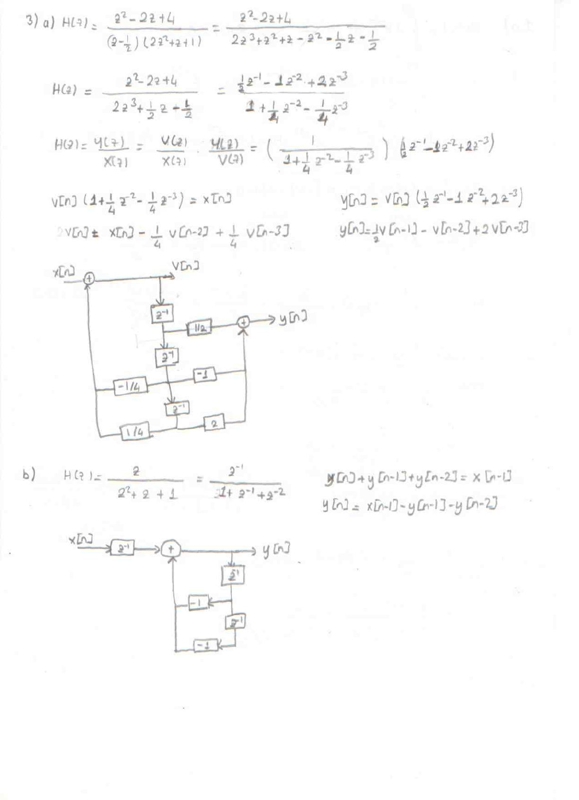
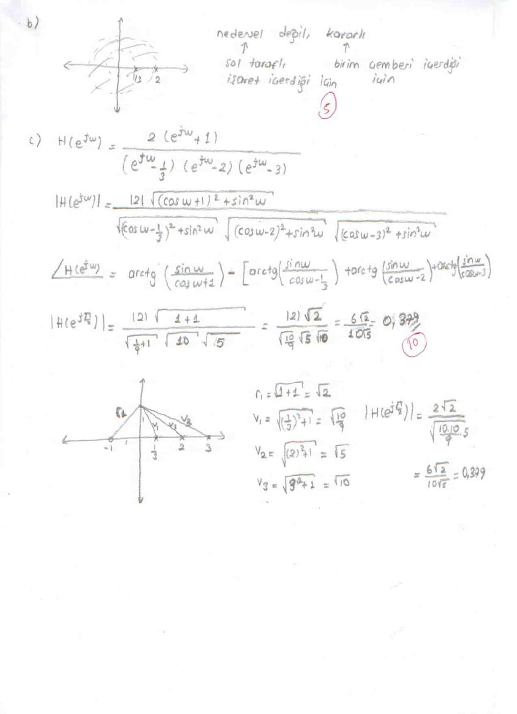

· EEM308
EEM308 Signals and Systems II: Midterm Answer Key (Laplace and z-Transform)
EEM308 – Sinyaller ve Sistemler II · 22.03.2015 · 16.10.2026
This post transcribes a four-page handwritten answer key for a midterm exam of the EEM 308 Signals and Systems II course at Başkent University. The document was among the sample questions for the spring 2014 semester, together with the quiz answer keys from the same semester; the handwriting is the same. There is no question sheet; the questions are described below as far as they can be inferred from the answers. The circled numbers show the section points. A PDF of the scanned pages can be downloaded at the end of the post.
1) Unilateral Laplace transform
a) X_I(s) = ∫₀^∞ 1·e⁻ˢᵗ dt = 1/s, Re(s) > 0
b) x(t) = δ(t + 1) + δ(t) + e^{−2(t+3)} u(t + 1). Since the integral in the unilateral transform starts at 0, δ(t + 1) contributes nothing, and δ(t) gives 1:
X_I(s) = 1 + ∫₀^∞ e^{−2(t+3)} e⁻ˢᵗ dt = 1 + e⁻⁶/(s + 2), Re(s) > −2
c) x(t) = 8 cos(πt/2) u(t) ∗ [u(t) − u(t − 1)]. Convolution corresponds to the product of the transforms:
- X_I1(s) = 8s / (s² + π²/4)
- X_I2(s) = 1/s − e⁻ˢ/s = (1 − e⁻ˢ)/s
X_I(s) = 8(1 − e⁻ˢ) / (s² + π²/4), Re(s) > 0
2) Transfer function via the eigenfunction method
The complex exponential x(t) = e^{s_k t} is an eigenfunction of an LTI system: y(t) = H(s_k) e^{s_k t}. Since y(t) = (1/6)e²ᵗ is given for x(t) = e²ᵗ, H(2) = 1/6.
As far as can be inferred from the answer, the question gives the relation dh/dt + 2h(t) = e^{−4t}u(t) + b·u(t); its Laplace transform is:
(s + 2)H(s) = 1/(s + 4) + b/s ⇒ H(s) = (s + b(s + 4)) / (s(s + 4)(s + 2))
H(2) = (2 + 6b)/(2·6·4) = 1/6 ⇒ 2 + 6b = 8 ⇒ b = 1
H(s) = 2(s + 2) / (s(s + 4)(s + 2)) = 2 / (s(s + 4))
3) Block diagrams
a) H(z) = (z² − 2z + 4) / ((z − ½)(2z² + z + 1)). Expanding the denominator gives 2z³ + ½z − ½; dividing the numerator and denominator by 2z³:
H(z) = (½z⁻¹ − z⁻² + 2z⁻³) / (1 + ¼z⁻² − ¼z⁻³)
With the intermediate variable v[n] (direct form II):
- V(z)/X(z) = 1/(1 + ¼z⁻² − ¼z⁻³) ⇒ v[n] = x[n] − ¼v[n − 2] + ¼v[n − 3]
- Y(z)/V(z) = ½z⁻¹ − z⁻² + 2z⁻³ ⇒ y[n] = ½v[n − 1] − v[n − 2] + 2v[n − 3]
b) H(z) = z/(z² + z + 1) = z⁻¹/(1 + z⁻¹ + z⁻²) ⇒ y[n] + y[n − 1] + y[n − 2] = x[n − 1], that is, y[n] = x[n − 1] − y[n − 1] − y[n − 2].

4) Convolution (via the z-transform)
With Y(z) = X(z)H(z):
- X(z) = 1 + 2z⁻¹ − z⁻² − 2z⁻³ + z⁻⁴ + 2z⁻⁵
- H(z) = z⁻¹ + 2z⁻²
Y(z) = z⁻¹ + 4z⁻² + 3z⁻³ − 4z⁻⁴ − 3z⁻⁵ + 4z⁻⁶ + 4z⁻⁷
| n | 0 | 1 | 2 | 3 | 4 | 5 | 6 | 7 |
|---|---|---|---|---|---|---|---|---|
| y[n] | 0 | 1 | 4 | 3 | −4 | −3 | 4 | 4 |
5) Partial fractions, causality, and frequency response (8 + 7 + 5 + 5 + 10 points)
a) H(z) = 2(z + 1) / ((z − ⅓)(z − 2)(z − 3)) = A/(z − ⅓) + B/(z − 2) + C/(z − 3)
- A = 2(4/3) / ((−5/3)(−8/3)) = 3/5
- B = 2(3) / ((5/3)(−1)) = −18/5
- C = 2(4) / ((8/3)(1)) = 3
Since the system is assumed stable, the ROC must contain the unit circle: 1/3 < |z| < 2. The impulse response in the answer key:
h[n] = (3/5)(1/3)ⁿ u[n] − [3·(3)ⁿ − (18/5)(2)ⁿ] u[−n − 1]
Note: This expression was obtained by inverting the A/(z − a) terms as if they were A/(1 − az⁻¹), and it gives a result one sample ahead of the correct answer (the inverse transform of z·H(z)). Since A/(z − a) = A z⁻¹/(1 − az⁻¹), the correct result is h[n] = (3/5)(1/3)ⁿ⁻¹ u[n − 1] + [(18/5)·2ⁿ⁻¹ − 3ⁿ] u[−n] = (9/5)(1/3)ⁿ u[n − 1] + [(9/5)·2ⁿ − 3ⁿ] u[−n]. This result was verified by numerically comparing the sum Σ h[n] e^{−jωn} on the unit circle with H(e^{jω}).
b) The system is not causal (the ROC is an annulus, and the impulse response contains a left-sided signal) and is stable (the ROC contains the unit circle).
c) Frequency response:
H(e^{jω}) = 2(e^{jω} + 1) / ((e^{jω} − ⅓)(e^{jω} − 2)(e^{jω} − 3))
| H(e^{jω}) | = 2√((cos ω + 1)² + sin²ω) / [√((cos ω − ⅓)² + sin²ω) · √((cos ω − 2)² + sin²ω) · √((cos ω − 3)² + sin²ω)] |
|---|
∠H(e^{jω}) = arctan(sin ω/(cos ω + 1)) − [arctan(sin ω/(cos ω − ⅓)) + arctan(sin ω/(cos ω − 2)) + arctan(sin ω/(cos ω − 3))]
At ω = π/2 (z = j), the lengths of the vectors drawn from the zero and the poles to the point z = j are: r₁ = √2 for the zero, and v₁ = √(10/9), v₂ = √5, v₃ = √10 for the poles. Thus:
|H(e^{jπ/2})| = 2√2 / (√(10/9)·√5·√10) = 6√2/(10√5) ≈ 0.379
